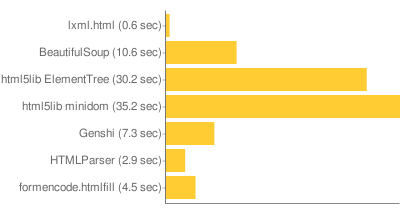
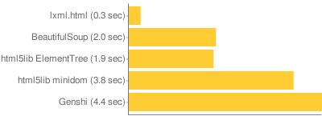

In preparation for my PyCon talk on HTML I thought I’d do a performance comparison of several parsers and document models.
The situation is a little complex because there’s different steps in handling HTML:
- Parse the HTML
- Parse it into something (a document object)
- Serialize it
Some libraries handle 1, some handle 2, some handle 1, 2, 3, etc. For instance, ElementSoup uses ElementTree as a document, but BeautifulSoup as the parser. BeautifulSoup itself has a document object included. HTMLParser only parses, while html5lib includes tree builders for several kinds of trees. There is also XML and HTML serialization.
So I’ve taken several combinations and made benchmarks. The combinations are:
- lxml: a parser, document, and HTML serializer. Also can use BeautifulSoup and html5lib for parsing.
- BeautifulSoup: a parser, document, and HTML serializer.
- html5lib: a parser. It has a serializer, but I didn’t use it. It has a built-in document object (simpletree), but I don’t think it’s meant for much more than self-testing.
- ElementTree: a document object, and XML serializer (I think newer versions might include an HTML serializer, but I didn’t use it). It doesn’t have a parser, but I used html5lib to parse to it. (I didn’t use the ElementSoup.)
- cElementTree: a document object implemented as a C extension. I didn’t find any serializer.
- HTMLParser: a parser. It didn’t parse to anything. It also doesn’t parse lots of normal (but maybe invalid) HTML. When using it, I just ran documents through the parser, not constructing any tree.
- htmlfill: this library uses HTMLParser, but at least pays a little attention to the elements as they are parsed.
- Genshi: includes a parser, document, and HTML serializer.
- xml.dom.minidom: a document model built into the standard library, which html5lib can parse to. (I do not recommend using minidom for anything — some reasons will become apparent in this post, but there are many other reasons not covered why you shouldn’t use it.)
I expected lxml to perform well, as it is based on the C library libxml2. But it performed better than I realized, far better than any other library. As a result, if it wasn’t for some persistent installation problems (especially on Macs) I would recommend lxml for just about any HTML task.
You can try the code out here. I’ve included all the sample data, and the commands I ran for these graphs are here. These tests use a fairly random selection of HTML files (355 total) taken from python.org.
Parsing

The first test parses the documents. Things to note: lxml is 6x faster than even HTMLParser, even though HTMLParser isn’t doing anything (lxml is building a tree in memory). I didn’t include all the things html5lib can parse to, because they all take about the same amount of time. xml.dom.minidom is only included because it is so noticeably slow. Genshi is fairly fast, but it’s the most fragile of the parsers. html5lib, lxml, and BeautifulSoup are all fairly similarly robust. html5lib has the benefit of (at least in theory) being the correct parsing of HTML.
While I don’t really believe it matters often, lxml releases the GIL during parsing.
Serialization

Serialization is pretty fast across all the libraries, though again lxml leads the pack by a long distance. ElementTree and minidom are only doing XML serialization, but there’s no reason that the HTML equivalent would be any faster. That Genshi is slower than minidom is surprising. That anything is worse than minidom is generally surprising.
Memory

The last test is of memory. I don’t have a lot of confidence in the way I made this test, but I’m sure it means something. This was done by parsing all the documents and holding the documents in memory, and using the RSS size reported by ps to see how much the process had grown. All the libraries should be imported when calculating the baseline, so only the documents and parsing should cause the memory increase.
HTMLParser is a baseline, as it just keeps the documents in memory as a string, and creates some intermediate strings. The intermediate strings don’t end up accounting for anything, since the memory used is almost exactly the combined size of all the files.
A tricky part of this measurement is that the Python allocator doesn’t let go of memory that it requests, so if a parser creates lots of intermediate strings and then releases them the process will still hang onto all that memory. To detect this I tried allocating new strings until the process size grew (trying to detect allocated but unused memory), but this didn’t reveal much — only the BeautifulSoup parser, serialized to an lxml tree, showed much extra memory.
This is one of the only places where html5lib with cElementTree was noticeably different than html5lib with ElementTree. Not that surprising, I guess, since I didn’t find a coded-in-C serializer, and I imagine the tree building is only going to be a lot faster for cElementTree if you are building the tree from C code (as its native XML parser would do).
lxml is probably memory efficient because it uses native libxml2 data structures, and only creates Python objects on demand.
In Conclusion
I knew lxml was fast before I started these benchmarks, but I didn’t expect it to be quite this fast.
So in conclusion: lxml kicks ass. You can use it in ways you couldn’t use other systems. You can parse, serialize, parse, serialize, and repeat the process a couple times with your HTML before the performance will hurt you. With high-level constructs many constructs can happen in very fast C code without calling out to Python. As an example, if you do an XPath query, the query string is compiled into something native and traverses the native libxml2 objects, only creating Python objects to wrap the query results. In addition, things like the modest memory use make me more confident that lxml will act reliably even under unexpected load.
I also am more confident about using a document model instead of stream parsing. It is sometimes felt that streamed parsing is better: you don’t keep the entire document in memory, and your work generally scales linearly with your document size. HTMLParser is a stream-based parser, emitting events for each kind of token (open tag, close tag, data, etc). Genshi also uses this model, with higher-level stuff like filters to make it feel a bit more natural. But the stream model is not the natural way to process a document, it’s actually a really awkward way to handle a document that is better seen as a single thing. If you are processing gigabyte files of XML it can make sense (and both the normally document-oriented lxml and ElementTree offer options when this happens). This doesn’t make any sense for HTML. And these tests make me believe that even really big HTML documents can be handled quite well by lxml, so a huge outlying document won’t break a system that is appropriately optimized for handling normal sized documents.
Automatically generated list of related posts:
- lxml.html Over the summer I did quite a bit of work...
- HTML Accessibility So I gave a presentation at PyCon about HTML, which...
- A Python Web Application Package and Format (we should make one) At PyCon there was an open space about deployment, and...
- Opening Python Classes So, I was reading through comments to despam my old...
- 2 Python Environment Experiments two experiments in the Python environment. The first is virtualenv,...
Followed your twitter to this post. Looks like Genshi doesn’t do so bad, except for the serialization. That’s cool about lxml.
Ian, thanks for posting these, they are very useful. We’ve been fretting about what to do with our ever-slower developer test suite for launchpad.net, which does a LOT of BeautifulSoup parsing of generated pages for testing. Looks like lxml deserves some serious consideration.
BTW, for acceptance testing [WebTest](http://pythonpaste.org/webtest/) already includes lxml support (admittedly trivial to implement). You can do
assert app.get('/some_page').lxml.xpath('//div[contains(., 'something')]'). I think XPath would be quite useful for doing testing-related queries. (There’s also BeautifulSoup support with.html, and etree XML parsing with.xml, so WebTest is fairly agnostic.)Not really surprising that lxml does so well, it’s been very good for quite some time. I would have personally found interesting that you analyzed a bit more the set of random HTML files you used. Were they mainly well-formed, XHTML possibly, big files, containing lots of nested structures? The results would’ve be even more meaningful had we known that kind of information I think. Any chance you comment there?
I would be very curious about the part on memory allocation. I’ve been working on XMPP lately and therefore have used a sax parser baseline for the XML stream exchanged but have indeed found the fact the memory was not freed was a big issue on the long run. Any tips? That’d help.
The results aren’t all that much of a surprise, but I do have to wonder in the case of beautifulsoup how much of the performance difference is traded off (quite happily) in exchange for ability to successfully parse broken html.
Can I ask if you have a pointer to some discussion of why minidom sucks? (Apart from this speed issue, that is, which is illuminating but not disastrous.) I’ve used it in the past because it was in the stdlib and I assumed that was a vote of confidence, but now I’m worried that it’ll come back to bite me….
Ian: what do you mean elementtree (c or otherwise) doesn’t include a parser? What’s your definition of a parser? Do you mean it hasn’t got an HTML parser? (It clearly parses XML to an ET object …)
> Genshi is fairly fast, but its the most fragile of the parsers.
Details? The HTML parser in Genshi is based pretty much directly on HTMLParser, only with some added fixups for bad nesting.
For the serialization, the quality of the results seems to vary wildly. minidom and ElementTree simply produce XML output, which you would not be able to simply use as HTML on the web without things breaking (for example,
[script src]elements without a closing tag, or escaping the contents of[script]elements.) Genshi produces HTML you can use in the wild, and I assume lxml does that too.(BTW you’re comment system is stripping out script tags even in code spans)
Reproducing the serialization tests with Genshi trunk, I see 2.99s for serialization versus 3.21s for html5_minidom. So at least it doesn’t seem to be slower anymore :P But the real improvement comes from disabling whitespace stripping, which I guess none of the other serializers do:
That reduces the time taken to 1.78s on my machine. Probably still a bit slower than the rest, but at least it should produce good HTML ;)
One last minor comment about the memory use test: for Genshi, your test keeps the entire parsed document in memory. You ”could” set the Genshi test up in a way that would parse and serialize in a completely streaming fashion (using
genshi.input.HTMLParser). That would take some tweaks to the test infrastructure, so that the test types would be passed file objects that would be closed externally.Anyway, just saying this test in no way demonstrates the advantage of streaming on memory use. On the other hand, I’m not arguing that there is an advantage for most use cases, either.
An interesting post, Ian! I think I’ll try the code out with libxml2dom (http://www.python.org/pypi/libxml2dom) and see if the performance is in line with lxml.html, since they should both use the same bits of libxml2.
More on the suckishness of minidom, please.
I’ve never been able to make much sense of the SAX-style “event” parsing, and always create a document tree. I’ve done it with and without minidom. Parsing without minidom is sometimes painful because I have to invent a class structure for the document, and some types of documents (HTML, XML representations of spreadsheets) have so many tags that I get dizzy trying to work out the classes. Parsing with minidom means struggling with their ineffective and brain-dead search capabilities; but at least I’ve got a structure that I can visit.
Thanks for showing these results Ian! It’s nice to see lxml (my baby too) do so well here. Stefan Behnel has been doing awesome work for the last few years in making lxml rock, and thanks for your HTML work too, which already was quite useful in a few of my own projects. Nothing could be done without all the great work by the libxml2 hackers, of course.
Anyway, people asked why minidom sucks. The answer would be to look at Ian’s benchmarks. :) Anyway, I don’t know the details as I never did the analysis, but I’ll give you the lore:
minidom for years has been doing very bad in various Python/XML benchmarks. It tends to gobble up inordinate amounts of memory compared to the competition, and in exchange it gives you DOM access that is relatively slow. It also doesn’t offer much in the way of other features (say, xpath). Finally, the DOM API isn’t a great API in the first place, especially from a Python perspective.
In general, excepting the ElementTree bits that are now in the library, the Python XML support in the standard library is inferior to some of what’s out there outside the standard library, in the API, feature and performance departments all. In addition, the Python XML project which theoretically works on this code base has been dead for some time now. If you’re going to do XML parsing with just the standard library, I’d recommend using the ElementTree bits. That’s not to say the other bits are absolutely useless – I’ve built quite a bit on the SAX support over the years, and while it’s low-level it’s reasonable for what it does (but again there ElementTree offers iterparse).
Remember that there are things in the standard library like xml.dom.pulldom which can be very useful. However, it’s a shame that PyXML has been more or less abandoned, since it could have fed things like XPath into the standard library. Instead, we’ve now got a lot of code which isn’t seeing very much maintenance, but which may be seeing a fair amount of use.
Bryan: these are all tests of HTML parsers, and ElementTree doesn’t include an HTML parser.
Josef, Christopher Lenz: I haven’t done any thorough tests, but from a couple examples I tried lxml seemed to parse a bit better than BeautifulSoup, and generally lxml parsed documents the same way as html5lib. In order to get HTMLParser to parse the pages from python.org (which themselves are relatively clean, but many were written by hand) I had to delete some doctypes that had bad syntax, as I remember, and a couple other things (some weird tags, I think, like
<a<p>). Then when I added Genshi I also had to delete some conditional comments in a Word export (like<![if something]>...<![endif>). The other parsers all at least ignored that. Of course, Genshi isn’t really intended to be used to parse random content on the web, so I don’t know if this really matters.Finally, on minidom:
I haven’t used minidom a great deal. When I have used it, it does technically work. It has methods like
getElementByIdwhich doesn’t work (but pretends to work). When I asked about it I got some vague answer about DTDs and document modes. The packages aren’t very well maintained. There used two be two implementations, the standard library, and PyXML which provided the same packages but on a faster release cycle. This pretty much killed the standard library advantage, because you couldn’t rely on the libraries working in a consistent way. Now that PyXML is basically dead, at least the code is stable. But the code itself is also dead. Given that minidom has no particularly good attributes, I don’t think it’s worth using. And now with ElementTree in the standard library it’s an even clearer choice.While lxml used to be hard to get installed on a Mac, I haven’t had trouble with it recently. OK, as I was typing that, I decided to fact-check myself. Running “easy_install lxml” with the system Python (2.5 on Leopard) tried to build lxml-2.1alpha1 and failed with a variety of errors. Changing that to ‘easy_install “lxml==1.0″‘ worked fine.
I think Fredrik would tell you that ElementTree leaves you the task to write the parser that fits your need and that’s why there is no HTML parser per se in its core. I think I recall him saying something along those lines anyway.
The current cElementTree implementation falls back on the Python serializer, but the next release will use an internal fast serializer for most cases.
As for HTML parsing, that’s a huge topic, and lots of folks have worked hard on that, pretty much all without getting it entirely right (but once HTML5 stabilizes, I’m sure we’ll see fast C/C++ implementations of that approach). But if someone wants to contribute a fast, self-contained HTML parser in C or Python that’s on par with BeautifulSoup but produces a SAX-style event stream instead, be my guest ;-)
(where’s Tidy, btw? Benchmarking a tidy->xhtml->xml parser pipeline could be somewhat interesting, I think.)
I think it’s fine that ElementTree doesn’t include a parser, it’s totally legitimate to choose that partitioning. And right now I don’t think an HTML parser belongs in the standard library.
There is a pure-Python parser that generates a SAX-style event stream: html5lib. It’s accurate but for now slow. Not surprising since it is a reference implementation. (There seems to be an incomplete C parser in the html5lib project too?)
There is a fast C implementation of HTML parsing available: lxml. Or using just the simpler underlying libxml2 Python bindings (which I believe are rather unsafe, but as long as you use them carefully I guess they’d be okay). It would be very easy to write an lxml to ElementTree translator, but so far no one has bothered (which is unsurprising, really).
Tidy would be interesting, maybe I’ll try coding that up. However, it is by far the least accurate parser. In the Bad Old Days I used to use it, and it chewed up HTML quite badly. It isn’t just a tool for interpreting the ambiguities of HTML, it’s a tool to “fix” both the ambiguities and style problems. Even if you give it conservative options I would be reluctant to trust it. I would not recommend it as a parsing tool.
Congratulations on making the front page of del.icio.us.
It seems like a thoroughly researched piece!
> There seems to be an incomplete C parser in the html5lib project too?
Indeed, there is the very beginning of a pure-C HTML5 parser in the html5lib project. This has stalled recently as I have had other things to keep me busy and my total inexperience as a C developer makes it a tough project to dip into intermittently. If anyone fancies picking it up and giving it a push, they are most welcome to; you should be able to catch me in #whatwg on irc.freenode.net if you have any questions.
“I would recommend lxml for just about any HTML task.”
You’re missing a crucial qualification here – I’d say “for just about any HTML task where performance matters“. 90% of the time when I’m parsing HTML, differences in speed and memory usage are totally insignificant. I’d certainly trade off an order of magnitude speed difference for even a slight benefit in ease-of-use.
Still, it’s good to see numbers on how big the performance difference is, and I’ll probably look into using lxml with BeautifulSoup some time in the future.
Dan: no, no qualification, I would recommend lxml for just about any HTML task.
Hi,
Some time ago I was looking for a fast html parse that could handle ‘bad html’ and the winner was libxml2. I just wanted a SAX parsing, because instead of a generic tree, we use other kind or data structures.
Excelent article,
Cesar
… and I wasnt able to find an article like this. This post can save time to a lot of people.
Really nice article. Thanks.
Great overview of HTML parsers & friends! Very useful indeed.
Just one point about Mac OS X (10.4): I had no problem installing lxml! Just did a simple “sudo easy_install lxml”. libxml2 and Python were both installed in a quite standard way and without any pain (through Fink).
Hi
Is there any way to interpret javascript in Python?
example input:
document.write(‘<a href=”mailto:biuro’); document.write(‘@inprofi.pl”>biuro’); document.write(‘@inprofi.pl</a>’);
Sorry, but the website formatted example input into html. It was a code in javascript that concatenates some variables to generate an email address.
Well, hopefully you aren’t considering scraping email addresses…? You could look at python-spidermonkey, but the task isn’t all that easy, especially getting document.write to work.
Hi Ian Bicking
I like your posting on the lxml timing, however I have been working on some parsing with another programmer, however we are having some timing issues. Average 3 sec.
May I ask if you are a god on these type of scripts since I am aiming for a lower speed in which to process the data, if you are availible to assit can you please email me.
Many thanks Wayne
Hi Ian Bicking
I like your posting on the lxml timing, however I have been working on some parsing with another programmer, however we are having some timing issues. Average 3 sec.
May I ask if you are a god on these type of scripts since I am aiming for a lower speed in which to process the data, if you are availible to assit can you please email me.
Correction for the above post, Ian Bicking did not post at June 17, 2009 at 3:57 am for some reason the field auto filled and I did not notice it..
Many thanks Wayne
Like your other readers, I was surprised by your results.
I was also struck by my difficulty recognizing that your first graph was not meant to suggest a Gaussian (“Normal”) distribution, and then trying to match the graphs to your text.
Following Edward Tuft (htp://www.edwardtufte.com/), they would be easier to interpret if the values were sorted before creating the graphs. I hope you’ll excuse the character graphics, something like:
……………..Sec
..lxml.html 0.6|X
.MLParser 2.9|XXXX
.de.htmlfill 4.5|XXXXXXX
……Genshi 7.3|XXXXXXXXXXXX
.tifulSoup 10.6|XXXXXXXXXXXXXXXXX
mentTree 30.2|XXXXXXXXXXXXXXXXXXXXXXXXXXXXXXXXXXXXXXXXXXXXXXX
..minidom 35.2|XXXXXXXXXXXXXXXXXXXXXXXXXXXXXXXXXXXXXXXXXXXXXXXXXXX
………………………….+___________+___________+___________+___________+___________+________
given my inexperience with / incomprehension of “Markdown;” how DO you get an unordered list?
Thanks, and best wishes.
its not hard to install on ubuntu.
after you get the two components,
lxml can be done by
sudo apt-get install lxml-python
BAM!
I think you should invest some time in learning XPath. Parse the html string with lxml.html and then run xpath queries on that etree object. I bet it would simplify the code a lot (especially when you look for more information then just a node).
Wow, awesome tutorial, I was reading an out dated guide using xml.dom.ext.reader HtmlLib, I’m really happy I was able to find this ^__^
I finally got round to running the benchmarks with libxml2dom. Here are my results:
Parsing
[Chart](http://chart.apis.google.com/chart?chxl=0%3A|html5lib+simpletree+(38.5+sec)|html5lib+ElementTree+(39.7+sec)|HTMLParser+(4.1+sec)|libxml2dom+(0.7+sec)|&cht=bhs&chs=400×120&chd=e%3ABFGp..-E&chxt=y)
Serialising
(htmlparser omitted since it doesn’t serialise)
[Chart](http://chart.apis.google.com/chart?chxl=0%3A|html5simple+(2.2+sec)|html5et+(3.5+sec)|libxml2dom+(0.3+sec)|&cht=bhs&chs=400×90&chd=e%3AFf..oj&chxt=y)
Memory Usage
(“sec” in output manually changed to “MB”)
[Chart](http://chart.apis.google.com/chart?chxl=0%3A|html5lib+simpletree+(99.2+Mb)|html5lib+ElementTree+(64.0+Mb)|HTMLParser+(4.5+Mb)|libxml2dom+(26.3+Mb)|&cht=bhs&chs=400×120&chd=e%3AQ-C3pT..&chxt=y)
DeGroot points out that, while customers and suppliers may have their own ways of calculating dielectric constant, having a standardized IPC methodology will allow for better benchmarking of such attributes as frequency, classes of material types, and standardized test structures that are similar to practical signal traces.
I try to soup but it was very slow. So that I recomend eveyone to use lxml
Regards
what html parsing engine is used in Google Chrome?
This results are pretty much what I expected, but thanks anyway.